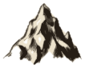


概要: 部品194個に、私の推論で「どんな地形に多いか」の点数(群れの点数)と「頂点になれるか」の点数(頂点の点数)を付けました。地形側も同じ8つの軸で点数にすれば、向きの近さ(コサイン類似度)で部品を選べます。これは私の見立ての案で、あなたが見て直す前提です。
高さ・険しさ・寒さ・乾燥・湿潤・火山性・浸食台地・なだらか(各0〜1)。地図データから測れる軸(高さ・険しさ・寒さ・乾燥・湿潤・なだらか)と、測れない軸(火山性・浸食台地。地層のデータが世界に無いため、滑らかな乱数の場から地球の分布の率で当てはめる予定)があります。
| 種類 | 群れの点数(高さ 険しさ 寒さ 乾燥 湿潤 火山性 浸食台地 なだらか) | 頂点(頂点になれる度/高さ/険しさ/寒さ) | 部品数 |
|---|---|---|---|
| 低く広い雪山 | 0.60 0.20 0.80 0.10 0.20 0.00 0.00 0.50 | 0.80 0.60 0.20 0.80 | 3 |
| 鋭い尖峰 | 0.90 0.95 0.60 0.20 0.20 0.10 0.00 0.00 | 1.00 0.95 0.95 0.60 | 7 |
| 非対称・肩の峰 | 0.80 0.80 0.50 0.30 0.30 0.10 0.10 0.10 | 1.00 0.80 0.80 0.50 | 6 |
| 台地・メサ | 0.30 0.30 0.00 0.80 0.10 0.00 0.95 0.10 | 0.70 0.30 0.30 0.00 | 10 |
| 双峰・大きな群れ | 0.85 0.80 0.50 0.30 0.30 0.10 0.10 0.10 | 1.00 0.85 0.80 0.50 | 13 |
| 尖った小峰の群れ | 0.60 0.70 0.30 0.30 0.40 0.00 0.00 0.20 | 0.40 0.60 0.70 0.30 | 22 |
| 岩塔・柱 | 0.50 0.85 0.10 0.70 0.10 0.00 0.60 0.00 | 1.00 0.50 0.85 0.10 | 14 |
| 長い山脈 | 0.70 0.70 0.40 0.30 0.30 0.00 0.00 0.20 | 0.30 0.70 0.70 0.40 | 9 |
| 崖・地層 | 0.35 0.60 0.05 0.70 0.10 0.00 0.90 0.05 | 0.50 0.40 0.60 0.05 | 15 |
| 丘陵の連なり | 0.20 0.10 0.10 0.30 0.60 0.00 0.00 0.95 | 0.00 0.20 0.10 0.10 | 11 |
| 火山 | 0.70 0.50 0.20 0.30 0.20 1.00 0.00 0.10 | 0.90 0.70 0.50 0.20 | 5 |
| 岩場・岩塊 | 0.30 0.30 0.10 0.70 0.10 0.00 0.30 0.30 | 0.10 0.30 0.30 0.10 | 13 |
| 氷河の山 | 0.90 0.70 1.00 0.00 0.10 0.00 0.00 0.10 | 0.90 0.90 0.70 1.00 | 1 |
| 草の丘 | 0.10 0.00 0.00 0.10 0.90 0.00 0.00 0.90 | 0.00 0.10 0.00 0.00 | 2 |
| 小峰の連なり | 0.50 0.60 0.30 0.30 0.40 0.00 0.00 0.30 | 0.20 0.50 0.60 0.30 | 15 |
| 砂丘 | 0.10 0.00 0.00 1.00 0.00 0.00 0.00 0.80 | 0.00 0.10 0.00 0.00 | 8 |
| 火口 | 0.20 0.30 0.10 0.40 0.10 0.95 0.20 0.30 | 0.10 0.20 0.30 0.10 | 2 |
| 峡谷 | 0.30 0.60 0.00 0.80 0.10 0.00 0.95 0.10 | 0.00 0.30 0.60 0.00 | 2 |
| 砂漠の飾り | 0.00 0.00 0.00 0.90 0.10 0.00 0.00 0.30 | 0.00 0.00 0.00 0.00 | 26 |
| 混合の連なり | 0.40 0.50 0.20 0.40 0.40 0.05 0.20 0.50 | 0.30 0.50 0.50 0.20 | 10 |

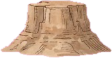
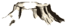
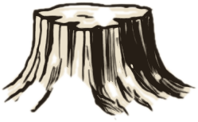

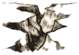
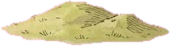


※ 近さの値は地形の点数を私が仮に置いた例です。実際の世界では、その場所の標高・険しさ・気候から地形の点数を計算します。
| 絵 | 番号 | 種類 | 群れの点数 | 頂点の点数 |
|---|---|---|---|---|
 | p01 色付き | 低く広い雪山 | 0.60 0.20 0.80 0.10 0.20 0.00 0.00 0.50 | 0.80 0.60 0.20 0.80 |
| p02 色付き | 鋭い尖峰 | 0.90 0.95 0.60 0.20 0.20 0.10 0.00 0.00 | 1.00 0.95 0.95 0.60 |
| p03 色付き | 鋭い尖峰 | 0.90 0.95 0.60 0.20 0.20 0.10 0.00 0.00 | 1.00 0.95 0.95 0.60 |
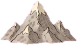 | p11 色付き | 非対称・肩の峰 | 0.80 0.80 0.50 0.30 0.30 0.10 0.10 0.10 | 1.00 0.80 0.80 0.50 |
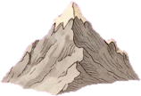 | p12 色付き | 非対称・肩の峰 | 0.80 0.80 0.50 0.30 0.30 0.10 0.10 0.10 | 1.00 0.80 0.80 0.50 |
| p19 色付き | 台地・メサ | 0.30 0.30 0.00 0.80 0.10 0.00 0.95 0.10 | 0.70 0.30 0.30 0.00 | |
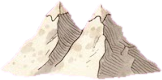 | p05 色付き | 双峰・大きな群れ | 0.85 0.80 0.50 0.30 0.30 0.10 0.10 0.10 | 1.00 0.85 0.80 0.50 |
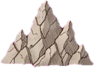 | p06 色付き | 尖った小峰の群れ | 0.60 0.70 0.30 0.30 0.40 0.00 0.00 0.20 | 0.40 0.60 0.70 0.30 |
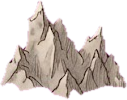 | p09 色付き | 尖った小峰の群れ | 0.60 0.70 0.30 0.30 0.40 0.00 0.00 0.20 | 0.40 0.60 0.70 0.30 |
 | p14 色付き | 尖った小峰の群れ | 0.60 0.70 0.30 0.30 0.40 0.00 0.00 0.20 | 0.40 0.60 0.70 0.30 |
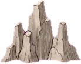 | p10 色付き | 岩塔・柱 | 0.50 0.85 0.10 0.70 0.10 0.00 0.60 0.00 | 1.00 0.50 0.85 0.10 |
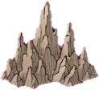 | p21 色付き | 岩塔・柱 | 0.50 0.85 0.10 0.70 0.10 0.00 0.60 0.00 | 1.00 0.50 0.85 0.10 |
 | p07 色付き | 長い山脈 | 0.70 0.70 0.40 0.30 0.30 0.00 0.00 0.20 | 0.30 0.70 0.70 0.40 |
 | p15 色付き | 長い山脈 | 0.70 0.70 0.40 0.30 0.30 0.00 0.00 0.20 | 0.30 0.70 0.70 0.40 |
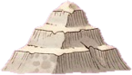 | p04 色付き | 崖・地層 | 0.35 0.60 0.05 0.70 0.10 0.00 0.90 0.05 | 0.50 0.40 0.60 0.05 |
 | p08 色付き | 崖・地層 | 0.35 0.60 0.05 0.70 0.10 0.00 0.90 0.05 | 0.50 0.40 0.60 0.05 |
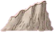 | p16 色付き | 崖・地層 | 0.35 0.60 0.05 0.70 0.10 0.00 0.90 0.05 | 0.50 0.40 0.60 0.05 |
 | p17 色付き | 崖・地層 | 0.35 0.60 0.05 0.70 0.10 0.00 0.90 0.05 | 0.50 0.40 0.60 0.05 |
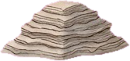 | p22 色付き | 崖・地層 | 0.35 0.60 0.05 0.70 0.10 0.00 0.90 0.05 | 0.50 0.40 0.60 0.05 |
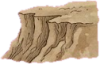 | p27 色付き | 崖・地層 | 0.35 0.60 0.05 0.70 0.10 0.00 0.90 0.05 | 0.50 0.40 0.60 0.05 |
| p13 色付き | 丘陵の連なり | 0.20 0.10 0.10 0.30 0.60 0.00 0.00 0.95 | 0.00 0.20 0.10 0.10 |
| p26 色付き | 丘陵の連なり | 0.20 0.10 0.10 0.30 0.60 0.00 0.00 0.95 | 0.00 0.20 0.10 0.10 |
| p18 色付き | 火山 | 0.70 0.50 0.20 0.30 0.20 1.00 0.00 0.10 | 0.90 0.70 0.50 0.20 |
 | p20 色付き | 岩場・岩塊 | 0.30 0.30 0.10 0.70 0.10 0.00 0.30 0.30 | 0.10 0.30 0.30 0.10 |
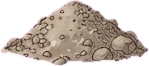 | p25 色付き | 岩場・岩塊 | 0.30 0.30 0.10 0.70 0.10 0.00 0.30 0.30 | 0.10 0.30 0.30 0.10 |
 | p28 色付き | 岩場・岩塊 | 0.30 0.30 0.10 0.70 0.10 0.00 0.30 0.30 | 0.10 0.30 0.30 0.10 |
| p23 色付き | 氷河の山 | 0.90 0.70 1.00 0.00 0.10 0.00 0.00 0.10 | 0.90 0.90 0.70 1.00 |
| p24 色付き | 草の丘 | 0.10 0.00 0.00 0.10 0.90 0.00 0.00 0.90 | 0.00 0.10 0.00 0.00 | |
| p29 色付き | 草の丘 | 0.10 0.00 0.00 0.10 0.90 0.00 0.00 0.90 | 0.00 0.10 0.00 0.00 |
| k01 線画1 | 低く広い雪山 | 0.60 0.20 0.80 0.10 0.20 0.00 0.00 0.50 | 0.80 0.60 0.20 0.80 | |
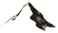 | k02 線画1 | 非対称・肩の峰 | 0.80 0.80 0.50 0.30 0.30 0.10 0.10 0.10 | 1.00 0.80 0.80 0.50 |
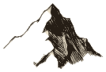 | k10 線画1 | 非対称・肩の峰 | 0.80 0.80 0.50 0.30 0.30 0.10 0.10 0.10 | 1.00 0.80 0.80 0.50 |
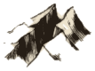 | k34 線画1 | 非対称・肩の峰 | 0.80 0.80 0.50 0.30 0.30 0.10 0.10 0.10 | 1.00 0.80 0.80 0.50 |
| k03 線画1 | 鋭い尖峰 | 0.90 0.95 0.60 0.20 0.20 0.10 0.00 0.00 | 1.00 0.95 0.95 0.60 | |
 | k04 線画1 | 双峰・大きな群れ | 0.85 0.80 0.50 0.30 0.30 0.10 0.10 0.10 | 1.00 0.85 0.80 0.50 |
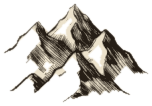 | k05 線画1 | 双峰・大きな群れ | 0.85 0.80 0.50 0.30 0.30 0.10 0.10 0.10 | 1.00 0.85 0.80 0.50 |
 | k06 線画1 | 双峰・大きな群れ | 0.85 0.80 0.50 0.30 0.30 0.10 0.10 0.10 | 1.00 0.85 0.80 0.50 |
 | k07 線画1 | 双峰・大きな群れ | 0.85 0.80 0.50 0.30 0.30 0.10 0.10 0.10 | 1.00 0.85 0.80 0.50 |
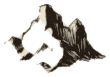 | k08 線画1 | 双峰・大きな群れ | 0.85 0.80 0.50 0.30 0.30 0.10 0.10 0.10 | 1.00 0.85 0.80 0.50 |
 | k09 線画1 | 尖った小峰の群れ | 0.60 0.70 0.30 0.30 0.40 0.00 0.00 0.20 | 0.40 0.60 0.70 0.30 |
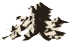 | k15 線画1 | 尖った小峰の群れ | 0.60 0.70 0.30 0.30 0.40 0.00 0.00 0.20 | 0.40 0.60 0.70 0.30 |
 | k17 線画1 | 尖った小峰の群れ | 0.60 0.70 0.30 0.30 0.40 0.00 0.00 0.20 | 0.40 0.60 0.70 0.30 |
 | k18 線画1 | 尖った小峰の群れ | 0.60 0.70 0.30 0.30 0.40 0.00 0.00 0.20 | 0.40 0.60 0.70 0.30 |
 | k19 線画1 | 尖った小峰の群れ | 0.60 0.70 0.30 0.30 0.40 0.00 0.00 0.20 | 0.40 0.60 0.70 0.30 |
 | k20 線画1 | 尖った小峰の群れ | 0.60 0.70 0.30 0.30 0.40 0.00 0.00 0.20 | 0.40 0.60 0.70 0.30 |
 | k22 線画1 | 尖った小峰の群れ | 0.60 0.70 0.30 0.30 0.40 0.00 0.00 0.20 | 0.40 0.60 0.70 0.30 |
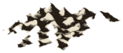 | k23 線画1 | 尖った小峰の群れ | 0.60 0.70 0.30 0.30 0.40 0.00 0.00 0.20 | 0.40 0.60 0.70 0.30 |
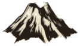 | k24 線画1 | 尖った小峰の群れ | 0.60 0.70 0.30 0.30 0.40 0.00 0.00 0.20 | 0.40 0.60 0.70 0.30 |
 | k25 線画1 | 尖った小峰の群れ | 0.60 0.70 0.30 0.30 0.40 0.00 0.00 0.20 | 0.40 0.60 0.70 0.30 |
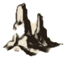 | k26 線画1 | 尖った小峰の群れ | 0.60 0.70 0.30 0.30 0.40 0.00 0.00 0.20 | 0.40 0.60 0.70 0.30 |
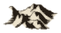 | k21 線画1 | 尖った小峰の群れ | 0.60 0.70 0.30 0.30 0.40 0.00 0.00 0.20 | 0.40 0.60 0.70 0.30 |
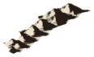 | k11 線画1 | 小峰の連なり | 0.50 0.60 0.30 0.30 0.40 0.00 0.00 0.30 | 0.20 0.50 0.60 0.30 |
 | k12 線画1 | 小峰の連なり | 0.50 0.60 0.30 0.30 0.40 0.00 0.00 0.30 | 0.20 0.50 0.60 0.30 |
 | k13 線画1 | 小峰の連なり | 0.50 0.60 0.30 0.30 0.40 0.00 0.00 0.30 | 0.20 0.50 0.60 0.30 |
 | k14 線画1 | 小峰の連なり | 0.50 0.60 0.30 0.30 0.40 0.00 0.00 0.30 | 0.20 0.50 0.60 0.30 |
 | k16 線画1 | 小峰の連なり | 0.50 0.60 0.30 0.30 0.40 0.00 0.00 0.30 | 0.20 0.50 0.60 0.30 |
| k27 線画1 | 火山 | 0.70 0.50 0.20 0.30 0.20 1.00 0.00 0.10 | 0.90 0.70 0.50 0.20 |
| k31 線画1 | 火山 | 0.70 0.50 0.20 0.30 0.20 1.00 0.00 0.10 | 0.90 0.70 0.50 0.20 |
| k28 線画1 | 台地・メサ | 0.30 0.30 0.00 0.80 0.10 0.00 0.95 0.10 | 0.70 0.30 0.30 0.00 | |
| k32 線画1 | 台地・メサ | 0.30 0.30 0.00 0.80 0.10 0.00 0.95 0.10 | 0.70 0.30 0.30 0.00 | |
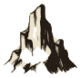 | k29 線画1 | 岩塔・柱 | 0.50 0.85 0.10 0.70 0.10 0.00 0.60 0.00 | 1.00 0.50 0.85 0.10 |
| k33 線画1 | 岩塔・柱 | 0.50 0.85 0.10 0.70 0.10 0.00 0.60 0.00 | 1.00 0.50 0.85 0.10 | |
 | k30 線画1 | 崖・地層 | 0.35 0.60 0.05 0.70 0.10 0.00 0.90 0.05 | 0.50 0.40 0.60 0.05 |
| k39 線画1 | 丘陵の連なり | 0.20 0.10 0.10 0.30 0.60 0.00 0.00 0.95 | 0.00 0.20 0.10 0.10 |
 | k36 線画1 | 砂丘 | 0.10 0.00 0.00 1.00 0.00 0.00 0.00 0.80 | 0.00 0.10 0.00 0.00 |
 | k37 線画1 | 岩場・岩塊 | 0.30 0.30 0.10 0.70 0.10 0.00 0.30 0.30 | 0.10 0.30 0.30 0.10 |
 | k38 線画1 | 岩場・岩塊 | 0.30 0.30 0.10 0.70 0.10 0.00 0.30 0.30 | 0.10 0.30 0.30 0.10 |
 | k40 線画1 | 岩場・岩塊 | 0.30 0.30 0.10 0.70 0.10 0.00 0.30 0.30 | 0.10 0.30 0.30 0.10 |
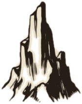 | h01 高解像 | 岩塔・柱 | 0.50 0.85 0.10 0.70 0.10 0.00 0.60 0.00 | 1.00 0.50 0.85 0.10 |
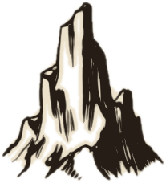 | h14 高解像 | 岩塔・柱 | 0.50 0.85 0.10 0.70 0.10 0.00 0.60 0.00 | 1.00 0.50 0.85 0.10 |
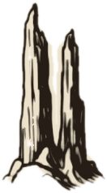 | h17 高解像 | 岩塔・柱 | 0.50 0.85 0.10 0.70 0.10 0.00 0.60 0.00 | 1.00 0.50 0.85 0.10 |
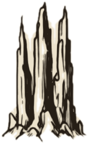 | h18 高解像 | 岩塔・柱 | 0.50 0.85 0.10 0.70 0.10 0.00 0.60 0.00 | 1.00 0.50 0.85 0.10 |
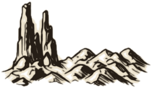 | h26 高解像 | 岩塔・柱 | 0.50 0.85 0.10 0.70 0.10 0.00 0.60 0.00 | 1.00 0.50 0.85 0.10 |
 | h29 高解像 | 岩塔・柱 | 0.50 0.85 0.10 0.70 0.10 0.00 0.60 0.00 | 1.00 0.50 0.85 0.10 |
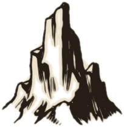 | h32 高解像 | 岩塔・柱 | 0.50 0.85 0.10 0.70 0.10 0.00 0.60 0.00 | 1.00 0.50 0.85 0.10 |
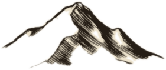 | h02 高解像 | 低く広い雪山 | 0.60 0.20 0.80 0.10 0.20 0.00 0.00 0.50 | 0.80 0.60 0.20 0.80 |
 | h03 高解像 | 非対称・肩の峰 | 0.80 0.80 0.50 0.30 0.30 0.10 0.10 0.10 | 1.00 0.80 0.80 0.50 |
| h04 高解像 | 鋭い尖峰 | 0.90 0.95 0.60 0.20 0.20 0.10 0.00 0.00 | 1.00 0.95 0.95 0.60 |
 | h36 高解像 | 鋭い尖峰 | 0.90 0.95 0.60 0.20 0.20 0.10 0.00 0.00 | 1.00 0.95 0.95 0.60 |
 | h05 高解像 | 小峰の連なり | 0.50 0.60 0.30 0.30 0.40 0.00 0.00 0.30 | 0.20 0.50 0.60 0.30 |
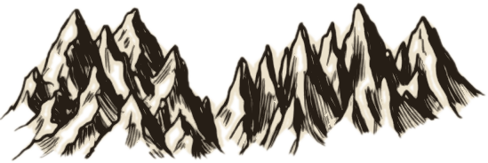 | h06 高解像 | 小峰の連なり | 0.50 0.60 0.30 0.30 0.40 0.00 0.00 0.30 | 0.20 0.50 0.60 0.30 |
 | h11 高解像 | 小峰の連なり | 0.50 0.60 0.30 0.30 0.40 0.00 0.00 0.30 | 0.20 0.50 0.60 0.30 |
 | h12 高解像 | 小峰の連なり | 0.50 0.60 0.30 0.30 0.40 0.00 0.00 0.30 | 0.20 0.50 0.60 0.30 |
 | h37 高解像 | 小峰の連なり | 0.50 0.60 0.30 0.30 0.40 0.00 0.00 0.30 | 0.20 0.50 0.60 0.30 |
 | h30 高解像 | 小峰の連なり | 0.50 0.60 0.30 0.30 0.40 0.00 0.00 0.30 | 0.20 0.50 0.60 0.30 |
 | h07 高解像 | 長い山脈 | 0.70 0.70 0.40 0.30 0.30 0.00 0.00 0.20 | 0.30 0.70 0.70 0.40 |
 | h08 高解像 | 尖った小峰の群れ | 0.60 0.70 0.30 0.30 0.40 0.00 0.00 0.20 | 0.40 0.60 0.70 0.30 |
 | h13 高解像 | 尖った小峰の群れ | 0.60 0.70 0.30 0.30 0.40 0.00 0.00 0.20 | 0.40 0.60 0.70 0.30 |
 | h31 高解像 | 尖った小峰の群れ | 0.60 0.70 0.30 0.30 0.40 0.00 0.00 0.20 | 0.40 0.60 0.70 0.30 |
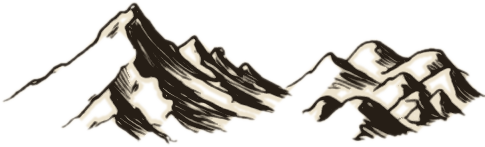 | h23 高解像 | 尖った小峰の群れ | 0.60 0.70 0.30 0.30 0.40 0.00 0.00 0.20 | 0.40 0.60 0.70 0.30 |
| h09 高解像 | 火山 | 0.70 0.50 0.20 0.30 0.20 1.00 0.00 0.10 | 0.90 0.70 0.50 0.20 |
 | h34 高解像 | 火山 | 0.70 0.50 0.20 0.30 0.20 1.00 0.00 0.10 | 0.90 0.70 0.50 0.20 |
| h15 高解像 | 台地・メサ | 0.30 0.30 0.00 0.80 0.10 0.00 0.95 0.10 | 0.70 0.30 0.30 0.00 | |
 | h28 高解像 | 台地・メサ | 0.30 0.30 0.00 0.80 0.10 0.00 0.95 0.10 | 0.70 0.30 0.30 0.00 |
 | h16 高解像 | 崖・地層 | 0.35 0.60 0.05 0.70 0.10 0.00 0.90 0.05 | 0.50 0.40 0.60 0.05 |
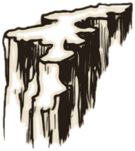 | h22 高解像 | 崖・地層 | 0.35 0.60 0.05 0.70 0.10 0.00 0.90 0.05 | 0.50 0.40 0.60 0.05 |
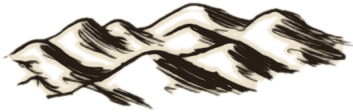 | h19 高解像 | 丘陵の連なり | 0.20 0.10 0.10 0.30 0.60 0.00 0.00 0.95 | 0.00 0.20 0.10 0.10 |
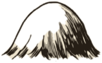 | h33 高解像 | 丘陵の連なり | 0.20 0.10 0.10 0.30 0.60 0.00 0.00 0.95 | 0.00 0.20 0.10 0.10 |
 | h20 高解像 | 砂丘 | 0.10 0.00 0.00 1.00 0.00 0.00 0.00 0.80 | 0.00 0.10 0.00 0.00 |
 | h21 高解像 | 岩場・岩塊 | 0.30 0.30 0.10 0.70 0.10 0.00 0.30 0.30 | 0.10 0.30 0.30 0.10 |
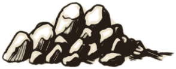 | h35 高解像 | 岩場・岩塊 | 0.30 0.30 0.10 0.70 0.10 0.00 0.30 0.30 | 0.10 0.30 0.30 0.10 |
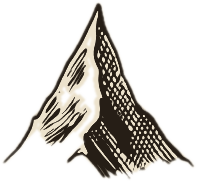 | h24 高解像 | 双峰・大きな群れ | 0.85 0.80 0.50 0.30 0.30 0.10 0.10 0.10 | 1.00 0.85 0.80 0.50 |
| h25 高解像 | 火口 | 0.20 0.30 0.10 0.40 0.10 0.95 0.20 0.30 | 0.10 0.20 0.30 0.10 |
| h27 高解像 | 火口 | 0.20 0.30 0.10 0.40 0.10 0.95 0.20 0.30 | 0.10 0.20 0.30 0.10 |
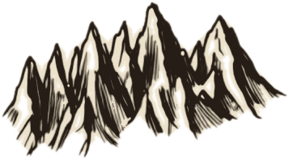 | m01 高解像2 | 尖った小峰の群れ | 0.60 0.70 0.30 0.30 0.40 0.00 0.00 0.20 | 0.40 0.60 0.70 0.30 |
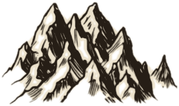 | m07 高解像2 | 尖った小峰の群れ | 0.60 0.70 0.30 0.30 0.40 0.00 0.00 0.20 | 0.40 0.60 0.70 0.30 |
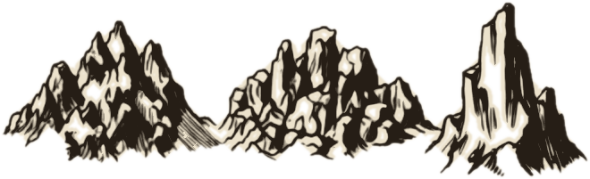 | m24 高解像2 | 尖った小峰の群れ | 0.60 0.70 0.30 0.30 0.40 0.00 0.00 0.20 | 0.40 0.60 0.70 0.30 |
 | m02 高解像2 | 双峰・大きな群れ | 0.85 0.80 0.50 0.30 0.30 0.10 0.10 0.10 | 1.00 0.85 0.80 0.50 |
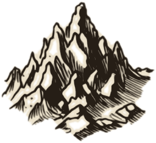 | m03 高解像2 | 双峰・大きな群れ | 0.85 0.80 0.50 0.30 0.30 0.10 0.10 0.10 | 1.00 0.85 0.80 0.50 |
 | m04 高解像2 | 双峰・大きな群れ | 0.85 0.80 0.50 0.30 0.30 0.10 0.10 0.10 | 1.00 0.85 0.80 0.50 |
 | m23 高解像2 | 双峰・大きな群れ | 0.85 0.80 0.50 0.30 0.30 0.10 0.10 0.10 | 1.00 0.85 0.80 0.50 |
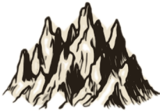 | m25 高解像2 | 双峰・大きな群れ | 0.85 0.80 0.50 0.30 0.30 0.10 0.10 0.10 | 1.00 0.85 0.80 0.50 |
| m05 高解像2 | 岩塔・柱 | 0.50 0.85 0.10 0.70 0.10 0.00 0.60 0.00 | 1.00 0.50 0.85 0.10 | |
 | m27 高解像2 | 岩塔・柱 | 0.50 0.85 0.10 0.70 0.10 0.00 0.60 0.00 | 1.00 0.50 0.85 0.10 |
 | m06 高解像2 | 小峰の連なり | 0.50 0.60 0.30 0.30 0.40 0.00 0.00 0.30 | 0.20 0.50 0.60 0.30 |
| m18 高解像2 | 小峰の連なり | 0.50 0.60 0.30 0.30 0.40 0.00 0.00 0.30 | 0.20 0.50 0.60 0.30 | |
 | m08 高解像2 | 台地・メサ | 0.30 0.30 0.00 0.80 0.10 0.00 0.95 0.10 | 0.70 0.30 0.30 0.00 |
 | m09 高解像2 | 台地・メサ | 0.30 0.30 0.00 0.80 0.10 0.00 0.95 0.10 | 0.70 0.30 0.30 0.00 |
 | m26 高解像2 | 台地・メサ | 0.30 0.30 0.00 0.80 0.10 0.00 0.95 0.10 | 0.70 0.30 0.30 0.00 |
| m10 高解像2 | 崖・地層 | 0.35 0.60 0.05 0.70 0.10 0.00 0.90 0.05 | 0.50 0.40 0.60 0.05 | |
| m11 高解像2 | 崖・地層 | 0.35 0.60 0.05 0.70 0.10 0.00 0.90 0.05 | 0.50 0.40 0.60 0.05 | |
| m12 高解像2 | 崖・地層 | 0.35 0.60 0.05 0.70 0.10 0.00 0.90 0.05 | 0.50 0.40 0.60 0.05 | |
| m13 高解像2 | 峡谷 | 0.30 0.60 0.00 0.80 0.10 0.00 0.95 0.10 | 0.00 0.30 0.60 0.00 |
| m15 高解像2 | 丘陵の連なり | 0.20 0.10 0.10 0.30 0.60 0.00 0.00 0.95 | 0.00 0.20 0.10 0.10 | |
 | m28 高解像2 | 丘陵の連なり | 0.20 0.10 0.10 0.30 0.60 0.00 0.00 0.95 | 0.00 0.20 0.10 0.10 |
| m16 高解像2 | 長い山脈 | 0.70 0.70 0.40 0.30 0.30 0.00 0.00 0.20 | 0.30 0.70 0.70 0.40 | |
 | m17 高解像2 | 長い山脈 | 0.70 0.70 0.40 0.30 0.30 0.00 0.00 0.20 | 0.30 0.70 0.70 0.40 |
 | m19 高解像2 | 長い山脈 | 0.70 0.70 0.40 0.30 0.30 0.00 0.00 0.20 | 0.30 0.70 0.70 0.40 |
| m20 高解像2 | 長い山脈 | 0.70 0.70 0.40 0.30 0.30 0.00 0.00 0.20 | 0.30 0.70 0.70 0.40 | |
 | m21 高解像2 | 長い山脈 | 0.70 0.70 0.40 0.30 0.30 0.00 0.00 0.20 | 0.30 0.70 0.70 0.40 |
 | m22 高解像2 | 長い山脈 | 0.70 0.70 0.40 0.30 0.30 0.00 0.00 0.20 | 0.30 0.70 0.70 0.40 |
 | d01 砂漠 | 砂丘 | 0.10 0.00 0.00 1.00 0.00 0.00 0.00 0.80 | 0.00 0.10 0.00 0.00 |
| d02 砂漠 | 砂丘 | 0.10 0.00 0.00 1.00 0.00 0.00 0.00 0.80 | 0.00 0.10 0.00 0.00 | |
 | d05 砂漠 | 砂丘 | 0.10 0.00 0.00 1.00 0.00 0.00 0.00 0.80 | 0.00 0.10 0.00 0.00 |
 | d06 砂漠 | 砂丘 | 0.10 0.00 0.00 1.00 0.00 0.00 0.00 0.80 | 0.00 0.10 0.00 0.00 |
| d08 砂漠 | 砂丘 | 0.10 0.00 0.00 1.00 0.00 0.00 0.00 0.80 | 0.00 0.10 0.00 0.00 | |
 | d38 砂漠 | 砂丘 | 0.10 0.00 0.00 1.00 0.00 0.00 0.00 0.80 | 0.00 0.10 0.00 0.00 |
| d03 砂漠 | 小峰の連なり | 0.50 0.60 0.30 0.30 0.40 0.00 0.00 0.30 | 0.20 0.50 0.60 0.30 | |
| d04 砂漠 | 小峰の連なり | 0.50 0.60 0.30 0.30 0.40 0.00 0.00 0.30 | 0.20 0.50 0.60 0.30 | |
 | d07 砂漠 | 砂漠の飾り | 0.00 0.00 0.00 0.90 0.10 0.00 0.00 0.30 | 0.00 0.00 0.00 0.00 |
 | d09 砂漠 | 砂漠の飾り | 0.00 0.00 0.00 0.90 0.10 0.00 0.00 0.30 | 0.00 0.00 0.00 0.00 |
 | d10 砂漠 | 砂漠の飾り | 0.00 0.00 0.00 0.90 0.10 0.00 0.00 0.30 | 0.00 0.00 0.00 0.00 |
 | d11 砂漠 | 砂漠の飾り | 0.00 0.00 0.00 0.90 0.10 0.00 0.00 0.30 | 0.00 0.00 0.00 0.00 |
| d12 砂漠 | 砂漠の飾り | 0.00 0.00 0.00 0.90 0.10 0.00 0.00 0.30 | 0.00 0.00 0.00 0.00 | |
 | d13 砂漠 | 砂漠の飾り | 0.00 0.00 0.00 0.90 0.10 0.00 0.00 0.30 | 0.00 0.00 0.00 0.00 |
| d14 砂漠 | 砂漠の飾り | 0.00 0.00 0.00 0.90 0.10 0.00 0.00 0.30 | 0.00 0.00 0.00 0.00 | |
| d15 砂漠 | 砂漠の飾り | 0.00 0.00 0.00 0.90 0.10 0.00 0.00 0.30 | 0.00 0.00 0.00 0.00 | |
 | d16 砂漠 | 砂漠の飾り | 0.00 0.00 0.00 0.90 0.10 0.00 0.00 0.30 | 0.00 0.00 0.00 0.00 |
 | d17 砂漠 | 砂漠の飾り | 0.00 0.00 0.00 0.90 0.10 0.00 0.00 0.30 | 0.00 0.00 0.00 0.00 |
 | d18 砂漠 | 砂漠の飾り | 0.00 0.00 0.00 0.90 0.10 0.00 0.00 0.30 | 0.00 0.00 0.00 0.00 |
 | d26 砂漠 | 砂漠の飾り | 0.00 0.00 0.00 0.90 0.10 0.00 0.00 0.30 | 0.00 0.00 0.00 0.00 |
| d27 砂漠 | 砂漠の飾り | 0.00 0.00 0.00 0.90 0.10 0.00 0.00 0.30 | 0.00 0.00 0.00 0.00 | |
| d31 砂漠 | 砂漠の飾り | 0.00 0.00 0.00 0.90 0.10 0.00 0.00 0.30 | 0.00 0.00 0.00 0.00 | |
 | d32 砂漠 | 砂漠の飾り | 0.00 0.00 0.00 0.90 0.10 0.00 0.00 0.30 | 0.00 0.00 0.00 0.00 |
 | d33 砂漠 | 砂漠の飾り | 0.00 0.00 0.00 0.90 0.10 0.00 0.00 0.30 | 0.00 0.00 0.00 0.00 |
 | d34 砂漠 | 砂漠の飾り | 0.00 0.00 0.00 0.90 0.10 0.00 0.00 0.30 | 0.00 0.00 0.00 0.00 |
 | d35 砂漠 | 砂漠の飾り | 0.00 0.00 0.00 0.90 0.10 0.00 0.00 0.30 | 0.00 0.00 0.00 0.00 |
 | d36 砂漠 | 砂漠の飾り | 0.00 0.00 0.00 0.90 0.10 0.00 0.00 0.30 | 0.00 0.00 0.00 0.00 |
| d37 砂漠 | 砂漠の飾り | 0.00 0.00 0.00 0.90 0.10 0.00 0.00 0.30 | 0.00 0.00 0.00 0.00 | |
| d40 砂漠 | 砂漠の飾り | 0.00 0.00 0.00 0.90 0.10 0.00 0.00 0.30 | 0.00 0.00 0.00 0.00 | |
| d41 砂漠 | 砂漠の飾り | 0.00 0.00 0.00 0.90 0.10 0.00 0.00 0.30 | 0.00 0.00 0.00 0.00 | |
 | d42 砂漠 | 砂漠の飾り | 0.00 0.00 0.00 0.90 0.10 0.00 0.00 0.30 | 0.00 0.00 0.00 0.00 |
| d43 砂漠 | 砂漠の飾り | 0.00 0.00 0.00 0.90 0.10 0.00 0.00 0.30 | 0.00 0.00 0.00 0.00 | |
| d44 砂漠 | 砂漠の飾り | 0.00 0.00 0.00 0.90 0.10 0.00 0.00 0.30 | 0.00 0.00 0.00 0.00 | |
| d45 砂漠 | 砂漠の飾り | 0.00 0.00 0.00 0.90 0.10 0.00 0.00 0.30 | 0.00 0.00 0.00 0.00 | |
| d19 砂漠 | 岩場・岩塊 | 0.30 0.30 0.10 0.70 0.10 0.00 0.30 0.30 | 0.10 0.30 0.30 0.10 | |
 | d20 砂漠 | 岩場・岩塊 | 0.30 0.30 0.10 0.70 0.10 0.00 0.30 0.30 | 0.10 0.30 0.30 0.10 |
| d21 砂漠 | 岩場・岩塊 | 0.30 0.30 0.10 0.70 0.10 0.00 0.30 0.30 | 0.10 0.30 0.30 0.10 | |
 | d23 砂漠 | 岩場・岩塊 | 0.30 0.30 0.10 0.70 0.10 0.00 0.30 0.30 | 0.10 0.30 0.30 0.10 |
| d39 砂漠 | 岩場・岩塊 | 0.30 0.30 0.10 0.70 0.10 0.00 0.30 0.30 | 0.10 0.30 0.30 0.10 | |
 | d22 砂漠 | 台地・メサ | 0.30 0.30 0.00 0.80 0.10 0.00 0.95 0.10 | 0.70 0.30 0.30 0.00 |
 | d28 砂漠 | 台地・メサ | 0.30 0.30 0.00 0.80 0.10 0.00 0.95 0.10 | 0.70 0.30 0.30 0.00 |
 | d24 砂漠 | 丘陵の連なり | 0.20 0.10 0.10 0.30 0.60 0.00 0.00 0.95 | 0.00 0.20 0.10 0.10 |
| d25 砂漠 | 峡谷 | 0.30 0.60 0.00 0.80 0.10 0.00 0.95 0.10 | 0.00 0.30 0.60 0.00 | |
 | d29 砂漠 | 岩塔・柱 | 0.50 0.85 0.10 0.70 0.10 0.00 0.60 0.00 | 1.00 0.50 0.85 0.10 |
 | d30 砂漠 | 崖・地層 | 0.35 0.60 0.05 0.70 0.10 0.00 0.90 0.05 | 0.50 0.40 0.60 0.05 |
| n01 横長の絵 | 鋭い尖峰 | 0.90 0.95 0.60 0.20 0.20 0.10 0.00 0.00 | 1.00 0.95 0.95 0.60 | |
| n02 横長の絵 | 丘陵の連なり | 0.20 0.10 0.10 0.30 0.60 0.00 0.00 0.95 | 0.00 0.20 0.10 0.10 | |
| n03 横長の絵 | 混合の連なり | 0.40 0.50 0.20 0.40 0.40 0.05 0.20 0.50 | 0.30 0.50 0.50 0.20 | |
| n04 横長の絵 | 双峰・大きな群れ | 0.85 0.80 0.50 0.30 0.30 0.10 0.10 0.10 | 1.00 0.85 0.80 0.50 | |
| n05 横長の絵 | 崖・地層 | 0.35 0.60 0.05 0.70 0.10 0.00 0.90 0.05 | 0.50 0.40 0.60 0.05 | |
| n06 横長の絵 | 混合の連なり | 0.40 0.50 0.20 0.40 0.40 0.05 0.20 0.50 | 0.30 0.50 0.50 0.20 | |
| n07 横長の絵 | 丘陵の連なり | 0.20 0.10 0.10 0.30 0.60 0.00 0.00 0.95 | 0.00 0.20 0.10 0.10 | |
| n08 横長の絵 | 丘陵の連なり | 0.20 0.10 0.10 0.30 0.60 0.00 0.00 0.95 | 0.00 0.20 0.10 0.10 | |
| n09 横長の絵 | 混合の連なり | 0.40 0.50 0.20 0.40 0.40 0.05 0.20 0.50 | 0.30 0.50 0.50 0.20 | |
| n10 横長の絵 | 崖・地層 | 0.35 0.60 0.05 0.70 0.10 0.00 0.90 0.05 | 0.50 0.40 0.60 0.05 | |
| n11 横長の絵 | 混合の連なり | 0.40 0.50 0.20 0.40 0.40 0.05 0.20 0.50 | 0.30 0.50 0.50 0.20 | |
| n12 横長の絵 | 鋭い尖峰 | 0.90 0.95 0.60 0.20 0.20 0.10 0.00 0.00 | 1.00 0.95 0.95 0.60 | |
| n13 横長の絵 | 混合の連なり | 0.40 0.50 0.20 0.40 0.40 0.05 0.20 0.50 | 0.30 0.50 0.50 0.20 | |
| n14 横長の絵 | 混合の連なり | 0.40 0.50 0.20 0.40 0.40 0.05 0.20 0.50 | 0.30 0.50 0.50 0.20 | |
| n15 横長の絵 | 混合の連なり | 0.40 0.50 0.20 0.40 0.40 0.05 0.20 0.50 | 0.30 0.50 0.50 0.20 | |
| n16 横長の絵 | 混合の連なり | 0.40 0.50 0.20 0.40 0.40 0.05 0.20 0.50 | 0.30 0.50 0.50 0.20 | |
| n17 横長の絵 | 混合の連なり | 0.40 0.50 0.20 0.40 0.40 0.05 0.20 0.50 | 0.30 0.50 0.50 0.20 | |
| n18 横長の絵 | 混合の連なり | 0.40 0.50 0.20 0.40 0.40 0.05 0.20 0.50 | 0.30 0.50 0.50 0.20 |
前のページ: 部品の一覧(mapstyle25)